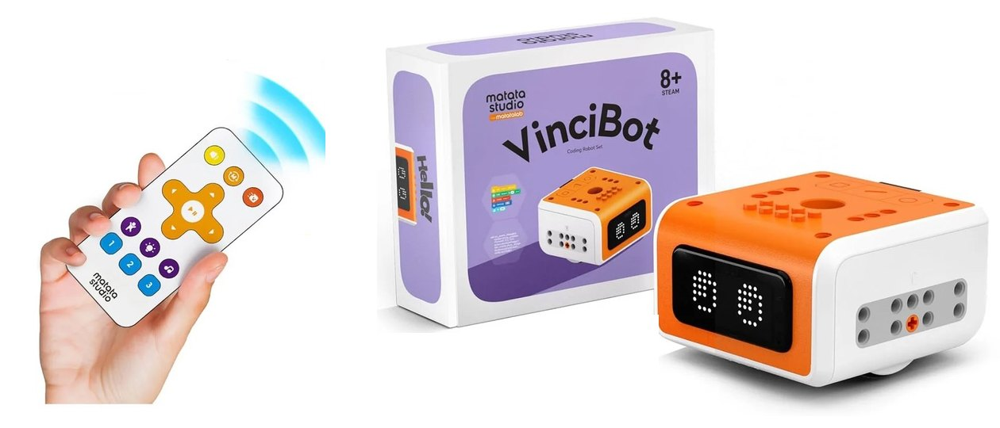

Ages 8-12
Builds problem solving at 8.
Plan the route, test it, find the bug, try again. Starts with a remote, grows into Scratch and Python.
- Ages 8-12
- 75 activity cards
- 18 challenges

Ages 8-12
Plan the route, test it, find the bug, try again. Starts with a remote, grows into Scratch and Python.
